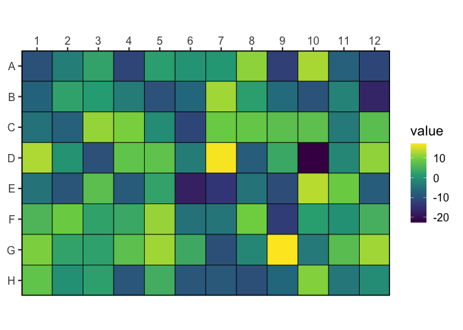

A set of tidy utilities for working with plate based data. Wet-lab experiments are often carried out in microplates of varying sizes. wellr aims to provide a cleaner interface to working with data from plate readers that works well within the tidyverse design principles.
wellr provides a consistent and reliable interface for dealing with plate-based data and related calculations. It provides functions for reading the output of various plate readers, indexing through and reformatting microtitre plates, converting between well IDs (“C05”) and their respective rows, columns and index.
Installation
From R-Universe:
This is the recommended way to install the package - as it requires no additional dependencies. It is currently not available on CRAN.
install.packages("wellr", repos = "bradyajohnston.r-universe.dev")Basic Examples
library(wellr)
well_format("G8")
#> [1] "G08"
well_to_col_num("G8")
#> [1] 8
well_to_row_num("G8")
#> [1] 7
well_to_index("H1")
#> [1] 85
well_to_index("H1", colwise = TRUE)
#> [1] 8
well_from_index(37)
#> <well<96>[1]>
#> [1] D01
well_from_index(37, colwise = TRUE)
#> <well<96>[1]>
#> [1] E05
well_join(3, 8)
#> [1] "C08"
well_join("E", 10)
#> [1] "E10"Well IDs that know their plate
Well IDs returned by wellr are well() vectors: they print, compare and join like the character vectors they are underneath, but also record the size of the plate they come from. Conversions use it automatically, so a 384 well plate is indexed correctly without saying so.
x <- well(c("a1", "B2", "p24"), plate = 384)
x
#> <well<384>[3]>
#> [1] A01 B02 P24
x == "B02"
#> [1] FALSE TRUE FALSE
well_to_index(x)
#> [1] 1 26 384
well_plate_size(x)
#> [1] 384Use as.character() to get a plain character vector.
Reading Biotek
Get the file paths of the demo files.
file_data <- system.file("extdata",
"20220929_1steptimer20.csv",
package = "wellr"
)
file_meta <- system.file("extdata",
"20220929_1steptimer20_metainfo.csv",
package = "wellr"
)Read in an example plate from a Biotek plate reader.
plate <- plate_read_biotek(file_data)
plate
#> # A tibble: 19,200 × 4
#> time well lum od600
#> <dbl> <well:384> <dbl> <dbl>
#> 1 358. A01 3 0.09
#> 2 358. A02 27 0.097
#> 3 358. A03 4 0.091
#> 4 358. A04 3 0.09
#> 5 358. A05 32 0.096
#> 6 358. A06 3 0.097
#> 7 358. A07 78 0.094
#> 8 358. A08 2 0.095
#> 9 358. A09 20 0.095
#> 10 358. A10 103 0.093
#> # ℹ 19,190 more rows
plate |>
plate_add_meta(file_meta)
#> # A tibble: 19,200 × 8
#> time well lum od600 strain concentration promoter rbs
#> <dbl> <well:384> <dbl> <dbl> <chr> <dbl> <chr> <chr>
#> 1 358. A01 3 0.09 <NA> NA <NA> <NA>
#> 2 358. A02 27 0.097 pRW0041 0 PJ23100 wk2
#> 3 358. A03 4 0.091 pRW0044 0 PJ23107 wk2
#> 4 358. A04 3 0.09 pRW0046 0 PJ23109 wk2
#> 5 358. A05 32 0.096 pRW0047 0 PJ23110 wk2
#> 6 358. A06 3 0.097 pRW0048 0 PJ23111 wk2
#> 7 358. A07 78 0.094 pRW0053 0 PJ23100 st8
#> 8 358. A08 2 0.095 pRW0056 0 PJ23107 st8
#> 9 358. A09 20 0.095 pRW0058 0 PJ23109 st8
#> 10 358. A10 103 0.093 pRW0059 0 PJ23110 st8
#> # ℹ 19,190 more rowsRead Biotek Wavelength Data
If the biotek .csv file includes spectral readings from different wavelengths, these won’t be included in the regular plate_read_biotek() function’s output - as they don’t have associated time information.
The plate_read_biotek_wl() function extracts these readings, and the resulting data frame includes a id column, specifying which wavelength reading they come from.
file_including_wavelength <- system.file(
"extdata", "2024-02-29_vio_GFP_main.csv",
package = "wellr"
)
plate_read_biotek(file_including_wavelength)
#> # A tibble: 14,304 × 7
#> time well od600 gfp_485 vio_575 vio_585 vio_595
#> <dbl> <well:96> <dbl> <dbl> <dbl> <dbl> <dbl>
#> 1 469. A01 0.041 260 0.042 0.041 0.041
#> 2 469. A02 0.043 258 0.044 0.044 0.043
#> 3 469. A03 0.043 258 0.044 0.044 0.044
#> 4 469. A04 0.044 254 0.044 0.044 0.044
#> 5 469. A05 0.044 256 0.044 0.044 0.044
#> 6 469. A06 0.043 255 0.044 0.044 0.044
#> 7 469. A07 0.043 244 0.044 0.044 0.044
#> 8 469. A08 0.045 252 0.045 0.045 0.045
#> 9 469. A09 0.045 251 0.045 0.045 0.045
#> 10 469. A10 0.045 247 0.045 0.046 0.045
#> # ℹ 14,294 more rowsIf reading in fluorescent data, there will sometimes be two wavelengths reported in the .csv. By default just the first wavelength will be used for the column names, but you can ensure that both wavelengths are included by useing second_wl = TRUE. The gfp column now includes the second wavelength that the fluorescence was measured at.
plate_read_biotek(file_including_wavelength, second_wl = TRUE)
#> # A tibble: 14,304 × 7
#> time well od600 gfp_485_530 vio_575 vio_585 vio_595
#> <dbl> <well:96> <dbl> <dbl> <dbl> <dbl> <dbl>
#> 1 469. A01 0.041 260 0.042 0.041 0.041
#> 2 469. A02 0.043 258 0.044 0.044 0.043
#> 3 469. A03 0.043 258 0.044 0.044 0.044
#> 4 469. A04 0.044 254 0.044 0.044 0.044
#> 5 469. A05 0.044 256 0.044 0.044 0.044
#> 6 469. A06 0.043 255 0.044 0.044 0.044
#> 7 469. A07 0.043 244 0.044 0.044 0.044
#> 8 469. A08 0.045 252 0.045 0.045 0.045
#> 9 469. A09 0.045 251 0.045 0.045 0.045
#> 10 469. A10 0.045 247 0.045 0.046 0.045
#> # ℹ 14,294 more rowsWhen reading the spectral data from the file, the readings do not include time data.
The resulting data frame will however include a id column with id = 1 being the first reading, id = 2 being the second reading etc.
plate_read_biotek_wl(file_including_wavelength)
#> # A tibble: 23,616 × 4
#> id wavelength well value
#> <chr> <dbl> <well:96> <dbl>
#> 1 1 300 A01 0.28
#> 2 1 300 A02 0.284
#> 3 1 300 A03 0.285
#> 4 1 300 A04 0.285
#> 5 1 300 A05 0.285
#> 6 1 300 A06 0.284
#> 7 1 300 A07 0.275
#> 8 1 300 A08 0.279
#> 9 1 300 A09 0.282
#> 10 1 300 A10 0.28
#> # ℹ 23,606 more rowsCreating Dummy Plates
Create a data frame for plate-based data.
well_plate(8, 12)
#> # A tibble: 96 × 3
#> row col well
#> <int> <int> <well:96>
#> 1 1 1 A01
#> 2 1 2 A02
#> 3 1 3 A03
#> 4 1 4 A04
#> 5 1 5 A05
#> 6 1 6 A06
#> 7 1 7 A07
#> 8 1 8 A08
#> 9 1 9 A09
#> 10 1 10 A10
#> # ℹ 86 more rowsHelpful Plotting Functions
set.seed(3)
plate <- well_plate(8, 12)[, "well"]
plate$value <- rnorm(96, sd = 10)
well_plot(plate, well, value)